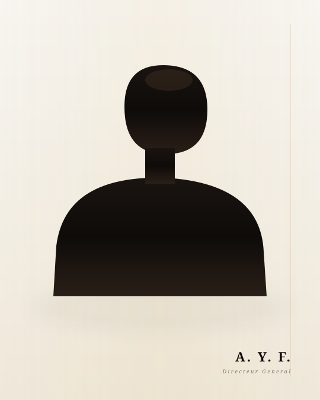
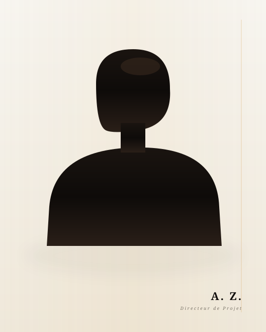

Aucun commercial. Aucun intermédiaire. Vous parlez directement aux deux fondateurs qui signent chaque rapport et chaque contrat.


Master Finance & Banking. Sa recherche porte sur la modélisation des défaillances financières des PME du BTP marocain, un travail qui structure directement la méthode ZAF BAT.
Nageur de compétition (médaillé international), il applique au pilotage de mandat la même discipline : protocole, mesure, ajustement.
Il pilote chaque mandat personnellement, sécurise les séquestres, négocie chaque avenant, et signe le rapport financier mensuel. Sa ligne directe ne passe par aucun assistant.
Ingénieur civil, spécialisé en béton armé et suivi de chantier gros œuvre. Il supervise quotidiennement les chantiers actifs, contrôle l'application des normes RPS 2011 sur la structure et détecte les malfaçons avant qu'elles coûtent.
Il signe chaque rapport hebdomadaire le mardi. Sa présence sur site est la garantie qu'aucune décision technique majeure n'est prise sans expertise civile qualifiée.
Pas un commercial. Pas un assistant. Ahmed Yassine vous répond personnellement sous 48 heures.